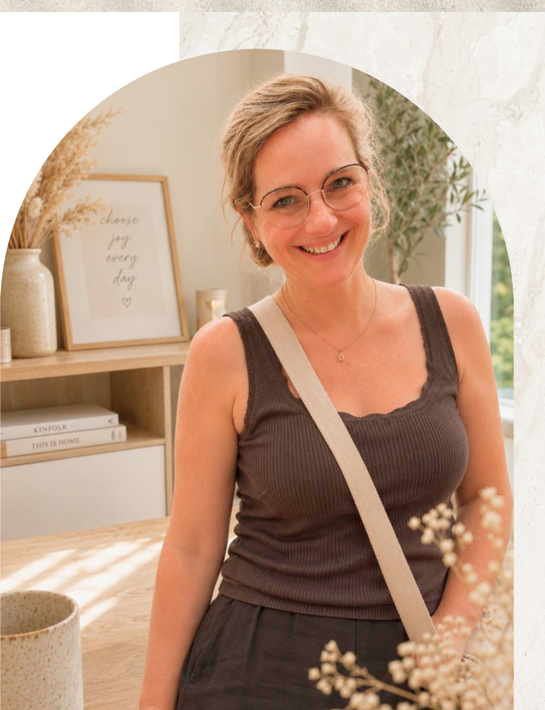

Over mij
Marinka Bénit
VA | Social Media | Content en Communicatie
Mijn naam is Marinka, 37 jaar en moeder van 5 kinderen. Vanuit mijn eigen Instagram-account @thuismama_eenhandvol heb ik de afgelopen jaren veel ervaring opgedaan met social media, content creëren, samenwerkingen en communicatie met merken en bedrijven.
Ik vind het leuk om dingen te regelen en overzicht te creëren. Ook denk ik graag mee over hoe dingen makkelijker of efficiënter kunnen. Ik krijg energie van orde scheppen en taken uit handen nemen.
Daarom ben ik gestart als virtual assistent.
Mijn ervaring
Van idee → content → publicatie → analyse
Via mijn Instagram-account @thuismama_eenhandvol heb ik de afgelopen jaren veel ervaring opgebouwd met social media en content maken.
Maar cijfers vertellen natuurlijk niet het hele verhaal. Ik hou mij dagelijks bezig met het bedenken, creëren en plannen van content, het schrijven van captions, het onderhouden van contact met bedrijven en het analyseren van resultaten. Daarnaast heb ik ervaring met samenwerkingen, PR en het professioneel communiceren met merken en bedrijven.
Die praktijkervaring zet ik nu in voor andere ondernemers.
Jij hoeft het niet allemaal zelf te doen. Als ondernemer wil je je tijd het liefst besteden aan de dingen waar jij goed in bent. Maar achter de schermen blijven er altijd taken liggen.
Meedenkend: ik voer niet alleen uit, maar denk graag mee over wat slimmer of efficiënter kan.
Praktisch: geen ingewikkeld gedoe. Gewoon aanpakken en zorgen dat het geregeld wordt.
Creatief: ik kijk graag naar content, communicatie en uitstraling.
Betrouwbaar: duidelijke afspraken, korte lijnen en doen wat we afspreken.
Persoonlijk: ik vind het belangrijk om jouw bedrijf en manier van werken echt te leren kennen.